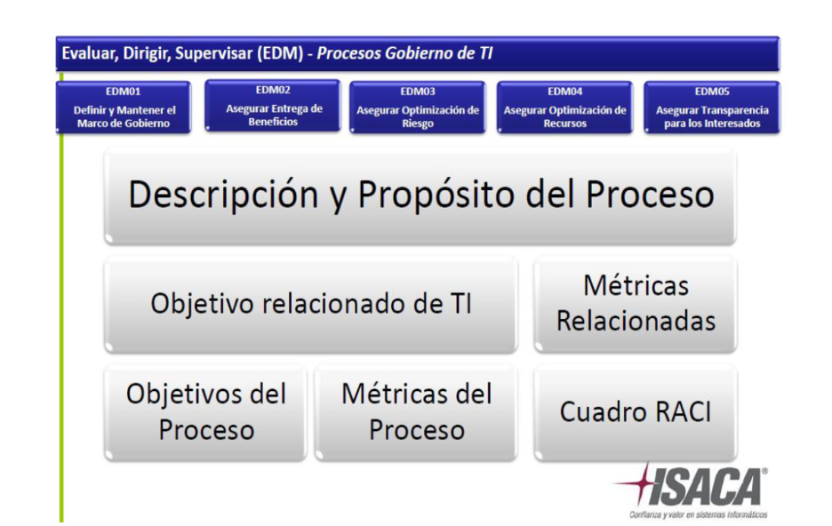
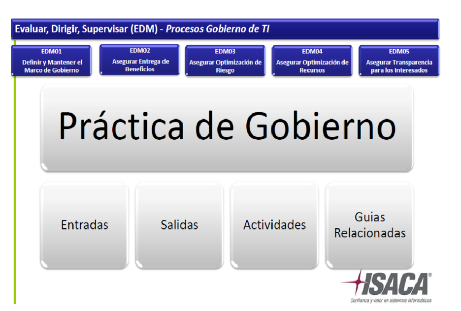
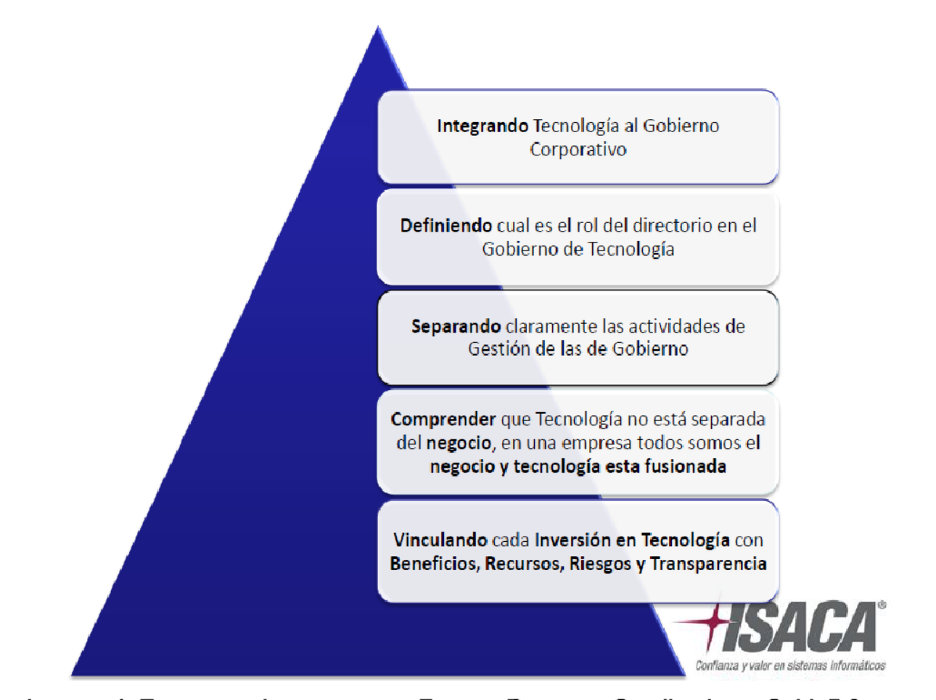

Capitulo III
AUDITORIA DEL AREA DE INFORMATICA UTILIZANDO LA METODOLOGIA DE COBIT 5.0.
3.1 Definir el objetivo de auditoría a desarrollar
Evaluar y mejorar la gestion de la tecnologia de la informacion en “Distribuidora de gas Vigil” utilizando el marco COBIT, con el fin de garantizar que los procesos de TI soporten adecuadamente los objetivos estratégicos del negocio y cumplan con las normativas de seguridad y efieciencia operativa.
1. Analizar los controles internos en los sistemas de gestión de inventarios y logística para asegurar que los datos de stock y distribución de cilindros de gas sean precisos y estén alineados con los procesos de negocio.
2.Evaluar el nivel de cumplimiento con las normativas de seguridad de la información y protección de datos personales, asegurando que los sistemas de TI cumplan con los requisitos legales y estándares de la industria para evitar posibles riesgos y sanciones.
3. Asegurar que la gobernanza y la gestión de TI estén alineadas con las expectativas y prioridades de la Distribuidora de gas Vigil, creando valor a través del uso eficiente de la tecnología y equilibrando riesgos y beneficios.
4. Integrar la gestión y el gobierno de TI en todos los niveles de la Distribuidora de gas Vigil, asegurando que todas las áreas y departamentos traten la información y la tecnología como activos estratégicos.
5. Utilizar COBIT 5 como marco central para alinear todas las normativas, estándares y buenas prácticas en Distribuidora de gas Vigil, garantizando una gestión coherente y eficiente de TI.
6. Desarrollar un sistema de gobierno de TI que considere todos los factores relevantes, desde los procesos y estructuras organizativas hasta la cultura y las competencias de la Distribuidora de gas Vigil.
La evaluación de los procesos de la Unidad de TI de la empresa Distribuidora de Gas Vigil se llevará a cabo utilizando la metodología COBIT 5.0, un marco de gobernanza y gestión de TI que permite alinear los objetivos estratégicos de la organización con sus procesos tecnológicos. Este análisis tiene como finalidad identificar las áreas de mejora dentro de los procesos actuales de TI, con el fin de garantizar que estos se desarrollen de manera eficiente, cumpliendo con los estándares y buenas prácticas internacionales de gobernanza de TI.
COBIT 5.0 proporciona un enfoque integral que permite evaluar cinco principios fundamentales: satisfacer las necesidades de las partes interesadas, cubrir la empresa de extremo a extremo, aplicar un marco único e integrado, habilitar un enfoque holístico y separar la gobernanza de la gestión. En este sentido, la revisión de los procesos en la Unidad de TI se realizará en función de estos principios, considerando no solo los aspectos técnicos, sino también la alineación de TI con el negocio, la maximización del valor de las inversiones en tecnología, la optimización de los recursos y la mitigación de riesgos.
1.Áreas de TI a auditar: La auditoría se enfocará en los procesos de gestión de inventarios, sistemas de facturación, control de distribución y la seguridad de la información dentro del entorno tecnológico de "Distribuidora de gas Vigil".
2. Sistemas tecnológicos: Se evaluarán los sistemas de software utilizados para la gestión de inventarios, el control de la logística de distribución de cilindros de gas, y las plataformas de facturación y atención al cliente en el negocio “Distribuidora de gas Vigil”.
Cada semana nos reunimos cuatro días durante cuatro horas para realizar el proceso de auditoría del negocio Distribuidora de Gas Vigil. De esos cuatro días, dos los dedicamos a visitar el negocio con el objetivo de tomar encuestas, recopilar información clave sobre los procesos operativos y tecnológicos, y conocer de primera mano su funcionamiento. Los otros dos días nos reunimos en la Universidad, donde colaboramos en tiempo real en la redacción y revisión del informe, utilizando Microsoft Word. Cada miembro del equipo tiene un rol específico, ya sea en las visitas al negocio o en la elaboración del informe, garantizando que todos contribuyan de manera efectiva al proyecto.
Metodología COBIT 5.0
La metodología que se empleará en este análisis es COBIT 5.0, un marco integral de gobernanza y gestión de TI diseñado para alinear las estrategias y procesos tecnológicos con los objetivos empresariales. COBIT 5.0 se centra en cinco principios fundamentales que guían la implementación de un gobierno eficiente de TI: satisfacer las necesidades de las partes interesadas, cubrir la empresa de extremo a extremo, aplicar un marco único e integrado, permitir un enfoque holístico y separar la gobernanza de la gestión. Estos principios proporcionan una base sólida para evaluar los procesos de TI, identificar áreas de mejora y establecer controles adecuados.
El enfoque metodológico incluirá una revisión detallada de los procesos clave de la unidad de TI, con énfasis en los controles internos, la seguridad de la información y la eficiencia operativa. Para ello, se realizará una evaluación de madurez en relación con los procesos tecnológicos actuales, midiendo su alineación con las mejores prácticas recomendadas por COBIT 5.0. Además, se aplicarán las guías de procesos y dominios de COBIT, como la planificación y organización, la adquisición e implementación, la entrega y el soporte, y el monitoreo y evaluación.
La metodología se complementará con entrevistas a los responsables de TI, análisis de documentación interna y auditorías de procesos clave. Esto permitirá no solo identificar las debilidades y brechas en los procesos actuales, sino también proponer acciones correctivas basadas en las mejores prácticas de COBIT 5.0, garantizando que los objetivos estratégicos de la empresa estén alineados con un gobierno eficiente de TI que cumpla con las normativas y promueva la seguridad y eficiencia en las operaciones.
Recurso humano
El equipo encargado de llevar a cabo la evaluación y mejora de los procesos de TI en la Distribuidora de Gas Vigil está compuesto por los siguientes integrantes, cada uno con roles específicos para asegurar el éxito del proyecto:
| Integrante | Rol | habilidades |
|---|---|---|
| José Jhonis Argueta Lemus | Lider |
|
| Edin Ivan Saravia Vigil | Colaborador |
|
| Arnold David Villatoro Santos | Colaborador |
|
Materiales y herramientas
| Elemento | Descripción |
|---|---|
| Laptops (3) | Tres computadoras portátiles, utilizadas para realizar la auditoría, el procesamiento de datos y demás tareas relacionadas. |
| Internet | Conexión a internet, necesaria para acceder a recursos en línea, herramientas de colaboración, y la documentación necesaria para el trabajo |
| Manual COBIT 5.0 | Documento que contiene las directrices y buenas prácticas del marco COBIT 5.0, utilizado para la gestión y el gobierno de TI. |
| Catalizadores | Factores que facilitan la implementación efectiva de procesos en el marco de COBIT 5.0, utilizado para la gestión y el gobierno de TI. |
| Microsoft Word | Software de procesamiento de textos, utilizado para la creación y edición de documentos, reportes y manuales. |
| Samsung Galaxy S20FE | Teléfono inteligente utilizado para comunicación, acceso a aplicaciones de trabajo |
| Xiomi Redmi 13 pro | Otro teléfono inteligente con características avanzadas para gestionar tareas de trabajo y comunicación móvil. |
| iPhone 13 | Dispositivo de Apple con acceso a herramientas de productividad comunicación, usado paras fines similares a los otros smartphones. |
Recurso financiero
| Duración de la auditoría en semanas | 20 |
| Cantidad de auditores | 3 |
| Días a la semana | 4 |
| Horas por día | 4 |
| Total, horas a la semana por auditor | 16 |
| Costo por hora | $20 |
| Total, por auditor semanal | $320 |
| Total, por tres auditores | $960 a la semana |
| Inversión total en 20 semanas | $19, 200 |
| Internet semanala | $15 |
| Total, en 20 semanas | $300 |
| Transporte semanal | $10 cada auditor |
| Alimentación por día | $6; 6x3=18; 18x4=72 |
El costo de la auditoria que se está realizando con el equipo es de $19, 602
| Semana 1 Motivo: Identificar empresa a auditor | 15 al 21 de julio de 2024 Identificar un prospecto de empresa con sistema informático que podría ser auditada |
| Semana 2: entrevista | Del 22 al 28 de julio Se le realizo una entrevista al negocio para conocer sobre que tipos de auditoria realizan y otros datos de carácter general. |
| Semana 3: auditoria a software de las computadoras de la empresa | Del 29 al 11 de agosto Se hiso uso de la herramienta Total Network Inventory la cual permite conocer que software tiene instalado una computadora así como su tipo de licencia. |
| Semana 4: Reconociendo la empresa y aplicando COBIT 5.0 | Del 12 al 18 de agosto Se realizo un reconocimiento de la empresa a auditar, nombre, dirección, naturaleza de la empresa, visión, misión, objetivos, etc. |
| Semana 5: Leyes en materia de informática | Del 19 al 25 de agosto Se conocieron algunas leyes relacionadas con la informática como la Ley reguladora de la auditoria, la Ley de acceso a la información, y el Reglamento para el control de las tecnologías de información y comunicación. |
| Semana 6: presentación de capítulos I y II de la auditoría con COBIT 5.0 | Del 26 de agosto al 01 de septiembre Se realizo presentación del avance de la auditoria concernientes al capítulo I y II |
| Semana 7: Como integrar y adoptar los estándares para integrar un buen gobierno de TI | Del 02 al 08 de septiembre de 2024 Se conoció como se pueden integrar otros estándares como la metologia SCRUM para el desarrollo de software, la metodología PMBOK para la gestión de proyectos, las normas ISO para cumplir los estándares, entre otros. |
| Semana 8: Identificando necesidades de la empresa a auditar | Se realizó una encuesta con 22 preguntas sugeridas por el marco COBIT 5.0 para conocer las necesidades de la empresa. |
| Semana 9: Mapeo de datos | Se realizo el mapeo de datos para identificar necesidades internas, a partir de los datos recolectados con la encuesta. |
| Semana 10: Refinando la cascada de metas | Revisión del documento completo que incluye toda la documentación desde el punto 3.1 del capítulo III hasta el punto 3.6 que es la identificación de los procesos habilitantes. |
| Semana 11: Evaluación de procesos | Cada equipo de trabajo realizando la
evaluación de procesos, usando
Plantilla evaluación de procesos. Procesos catalizadores guía de auditoría de procesos. Mapeo de necesidades elaborada en las semanas anteriores de este respectivo cómputo II. |
| Semana 12: Evaluación de procesos | Se realizo la revision de la evaluación de procesos |
| Semana 13 | Examenes parciales |
| Semana 14: Propuesta del plan de mejora | Se Trabajo en el plan de mejora |
| Semana 15: Propuesta del plan de mejora, continuación | Se siguio trabajano en el plan de mejora |
| Semana 16: Propuesta del Plan de Mejora, continuación... | Se identificaron las entradas y salidas del proceso. |
| Semana 17: Políticas del Plan de Mejora | Se crearon políticas para dar respuetas a los riesgos identificados. |
3.6 Identificando las necesidades de las partes interesadas de la empresa Distribuidora de gas Vigil.
Graficas más relevantes
3.6.1 ¿Cómo hacer el análisis de las necesidades de las partes interesadas?
| Necesidades de las partes interesadas de la empresa Distribuidora de gas Vigil | Promedio 1 | Promedio 2 | Promedio 3 | Promedio 4 | Promedio 5 | Promedio final |
| 10. Considero que hay suficiente personal de TI, y se gestiona adecuadamente el desarrollo de habilidades y el rendimiento del equipo | 0.6 | 1 | 1 | 1 | 3.6 | 1.44 |
| 12. Creo que está bien asegurada la información procesada | 0.8 | 1 | 0.8 | 0.8 | 3.6 | 1.40 |
| 14. Creo que los proyectos de TI no cumplen con las expectativas prometidas y la TI no permanece en el camino de ejecutar la estrategia de negocio. | 0.8 | 1 | 1 | 0.8 | 3.6 | 1.4 |
| 16. Siento que los procesos de negocio críticos dependen en gran medida de TI, y los requerimientos de estos procesos están bien definidos y gestionados. | 0.8 | 1 | 1 | 0.8 | 3.6 | 1.44 |
| 17. Creo que los presupuestos de operación de TI y los presupuestos de los proyectos de TI a menudo frecuentemente se salen del presupuesto asignado. | 0.8 | 1 | 1.2 | 0.8 | 3.2 | 1.40 |
| 18. Pienso que gran parte el esfuerzo de TI se dedica a resolver problemas urgentes en lugar de facilitar mejoras en el negocio | 0.8 | 1 | 0.8 | 0.8 | 3.4 | 1.36 |
3.7 Relacionando las necesidades de las partes interesadas de empresa Distribuidora de Gas Vigil con las metas de negocio.
| Metas corporativas con mayor valor | Puntaje |
|---|---|
| 1. Valor para las partes interesadas de las Inversiones de Negocio | 30 |
| 8. Respuestas ágiles a un entorno de negocio cambiante | 30 |
| 9. Toma estratégica de Decisiones basada en Información | 26 |
| 11. Optimización de la funcionalidad de los procesos de negocio | 30 |
| 15. Cumplimiento con las políticas internas | 26 |
Tabla 2: Necesidades de las partes interesadas con metas corporativas de la empresa Distribuidora de gas Vigil.
3.8 Obteniendo las metas TI para la empresa Distribuidora de gas Saravia
A partir del mapeo realizado con cinco metas organizacionales se ha podido identificar tres metas de TI. Además, cada una de ellas fue validada con la Unidad de Tecnología para ajustarse al modelo de la empresa.
| Metas de TI encontradas | Puntaje |
|---|---|
| 1. Alineamiento de TI y la estrategia de negocio. | 25 |
| 8. Uso adecuado de aplicaciones, información y soluciones tecnológica. | 25 |
| 17. Conocimiento, experiencia e iniciativas para la innovación del negocio. | 25 |
Tabla 3: Metas de TI encontradas en la empresa Distribuidora de gas Vigil.
3.9 Obteniendo los procesos habilitantes como resultado de cruzarlos con las metas de TI
| ID | Procesos | Puntaje |
|---|---|---|
| EDM01 | Asegurar el establecimiento y mantenimiento del Marco de Gobierno | 5 |
| APO01 | Gestionar el Marco de Gestión de TI | 3 |
| APO02 | Gestionar la Estrategia | 3 |
| APO07 | Gestionar los Recursos Humanos | 3 |
| BAI02 | Gestionar la Definición de Requisitos | 5 |
| BAI07 | Gestionar la Aceptación del Cambio y de la Transición | 5 |
Tabla 4: Procesos habilitantes resultantes de la empresa Distribuidora de Gas Vigil.
3.10 Marco Teorico
El programa de evaluación de COBIT está diseñado para proporcionar a las empresas una metodología repetible, fiable y robusta para la evaluación de la capacidad de sus procesos de TI. Estas evaluaciones normalmente se utilizan como parte del programa de mejora de los procesos de una empresa y luego se pueden utilizar para informar a la alta dirección ejecutiva de la empresa sobre la capacidad actual de sus procesos de TI y de los objetivos de mejora que deben tenerse en cuenta, para poder atender los requerimientos del negocio.
En Cobit 5.0 un proceso se define como ‘una colección de prácticas influidas por las políticas y procedimientos de empresa que toma entradas de una serie de recursos (incluyendo otros procesos), manipula las entradas y produce salidas (p. ej., productos, servicios)’.
El modelo de referencia de procesos de COBIT 5 subdivide los procesos dos principales áreas de actividad – gobierno y gestión – divididas en dominios de procesos. Procesos de Gobierno (EDM): Aseguran el cumplimiento de objetivos empresariales, evalúa necesidades, condiciones y opciones de los interesados, dirige a través de la priorización y toma de decisiones, supervisa (monitorea) el desempeño y cumplimiento contra la dirección y los objetivos acordados.
(Monitor) las actividades fijadas y acordadas por el cuerpo de gobierno.
Todos los procesos contienen
  